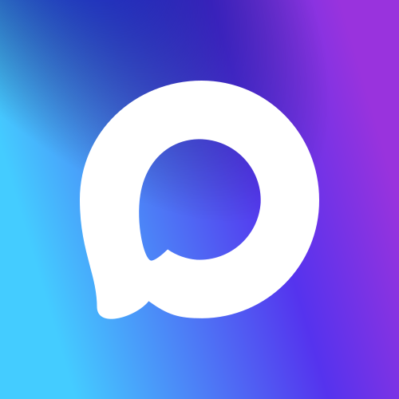

АВТО
ПЕРЕДВИЖНИКИ 2.0
AI Кейсы
Процесс
9 компетенций
Опыт
Контакт с нами
AI Кейсы
Процесс
9 компетенций
Опыт
Контакт с нами
20+ лет в авто и технике
Кейсы: Авто и техника
Запуски, имиджевые кампании и креатив, которые выводят бренды на дорогу и на полку
// кейс раскрыт между строк — сетка выше и ниже сохранена
←
Свернуть
Материалы кейса
→
Обсудить похожий проект
Контакт с нами
Андрей Черкашов
+7 915 025 77 18

Екатерина Сычева
+7 903 560 16 35
Email
info@pdvz02.ru
Написать письмо